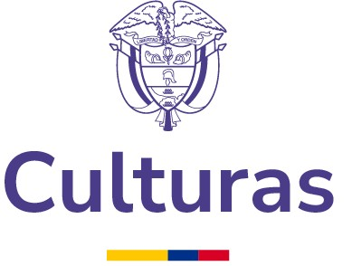
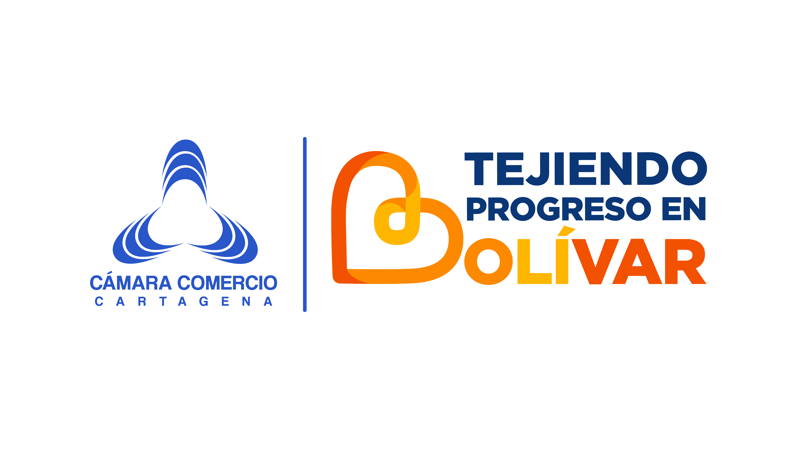
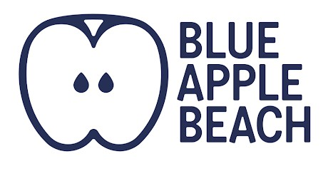

Comunicación
Fortalecemos voces y narrativas comunitarias.
Fortalecemos voces y narrativas comunitarias.
Reducimos brechas tecnológicas.
Impulsamos identidad, memoria y patrimonio.
Construimos soluciones para desafíos comunitarios.

Formamos jóvenes, líderes y organizaciones para aprovechar las tecnologías en beneficio del desarrollo territorial.
Ver Programas


Impulsamos procesos de inclusión digital, comunicación comunitaria y creación cultural que fortalecen capacidades y generan oportunidades en los territorios.
Somos una organización comprometida con el fortalecimiento comunitario mediante la comunicación, la cultura, la innovación social y la inclusión digital.
Conocer más
Promovemos procesos que fortalecen capacidades, impulsan la participación comunitaria y generan oportunidades para el desarrollo sostenible.
Fortalecemos voces y narrativas comunitarias.
Reducimos brechas tecnológicas.
Impulsamos identidad, memoria y patrimonio.
Construimos soluciones para desafíos comunitarios.
Formamos jóvenes, líderes y organizaciones para aprovechar las tecnologías en beneficio del desarrollo territorial.
Ver ProgramasTrabajamos en red para fortalecer procesos comunitarios y ampliar oportunidades de desarrollo.

Cada aporte fortalece oportunidades para comunidades, jóvenes y organizaciones.
```